部署环境是
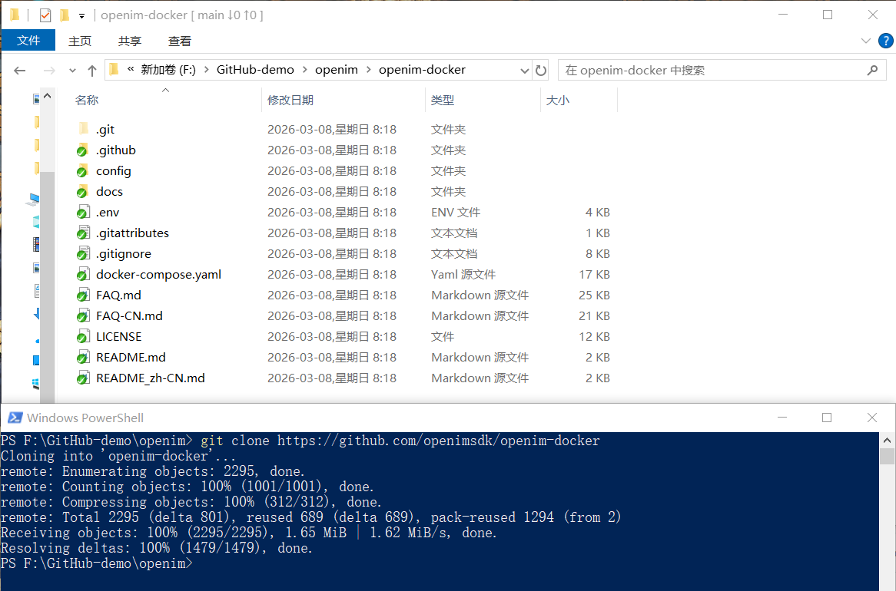
git clone https://github.com/openimsdk/openim-docker
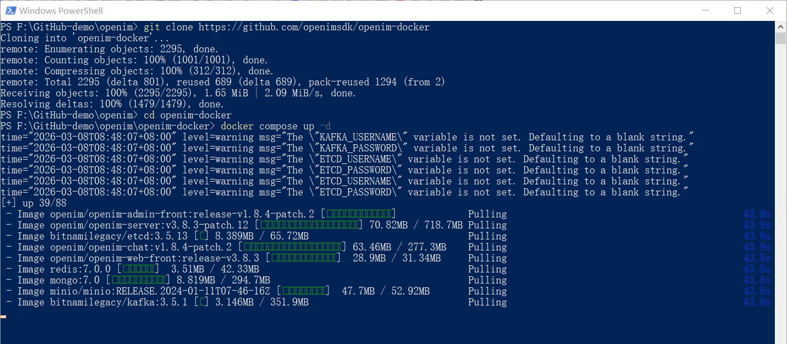
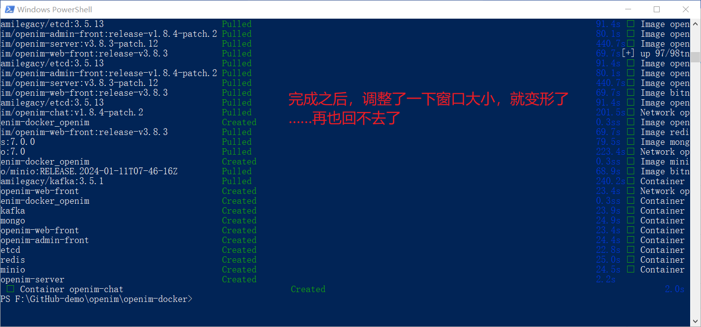
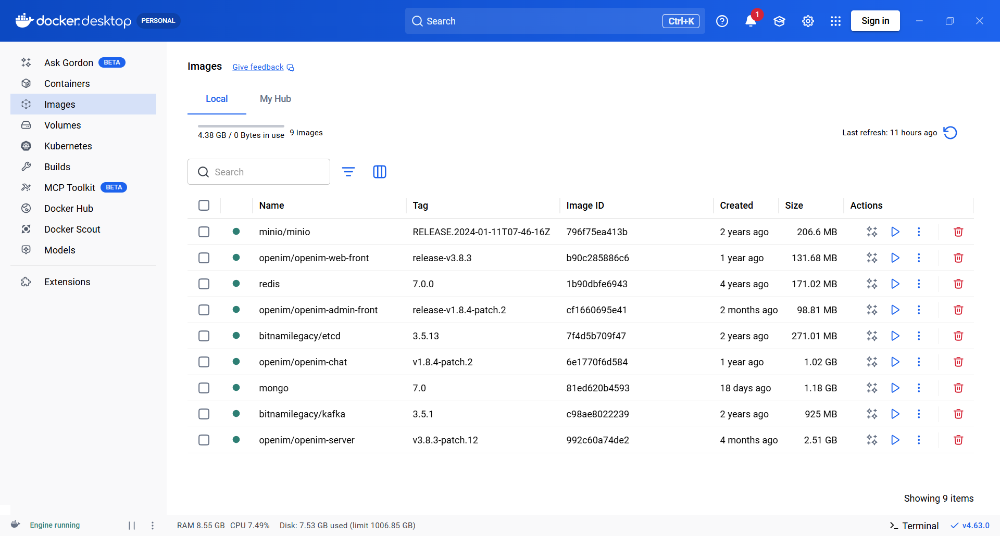
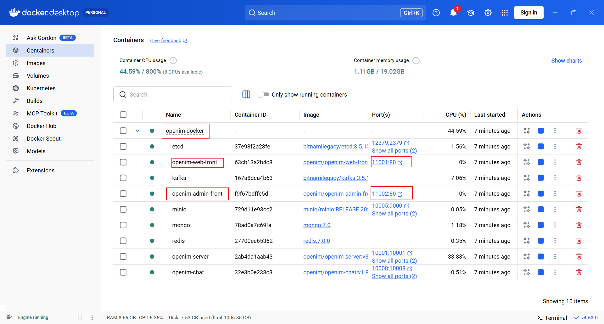
docker compose up -d
docker compose down
docker compose logs -f openim-server openim-chat
APP 管理员前端页面。这里可以进行用户管理哦
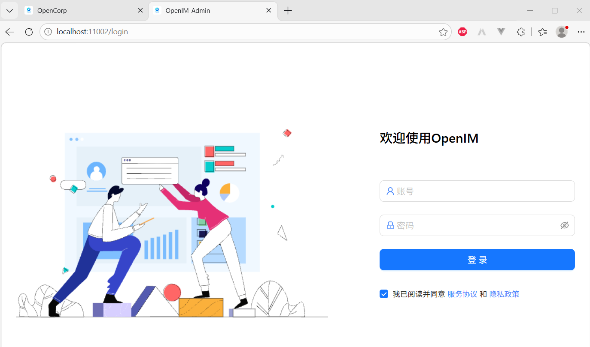
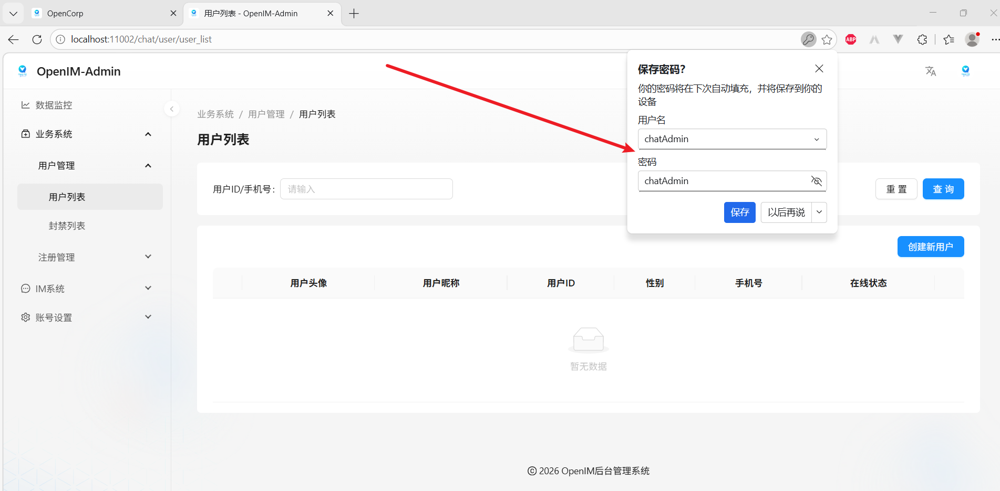
在这里创建了第一个用户，如下：
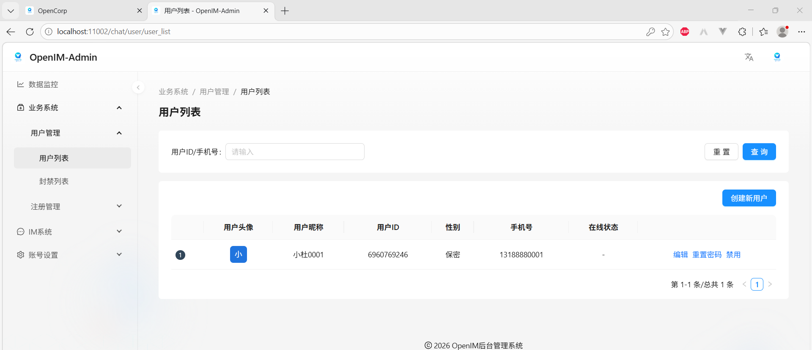
PC Web 前端。这里就可以聊天了，你想说点什么
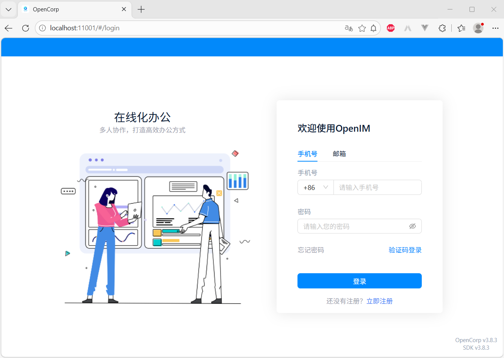
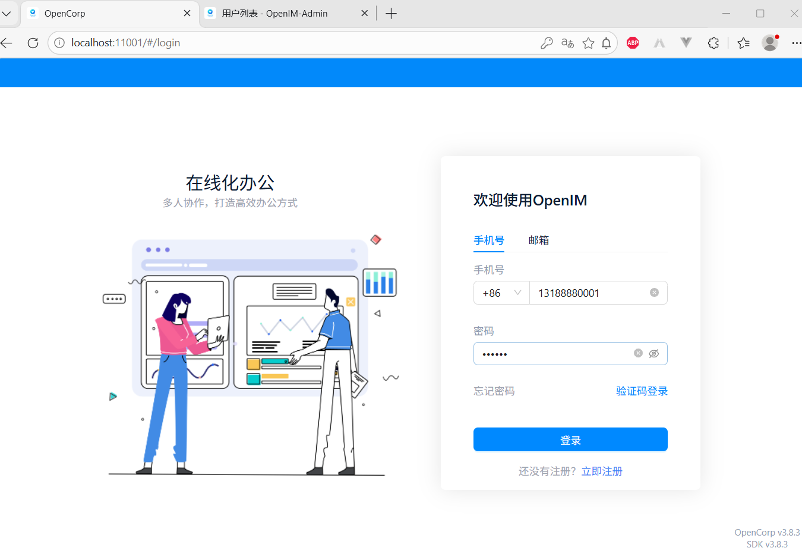
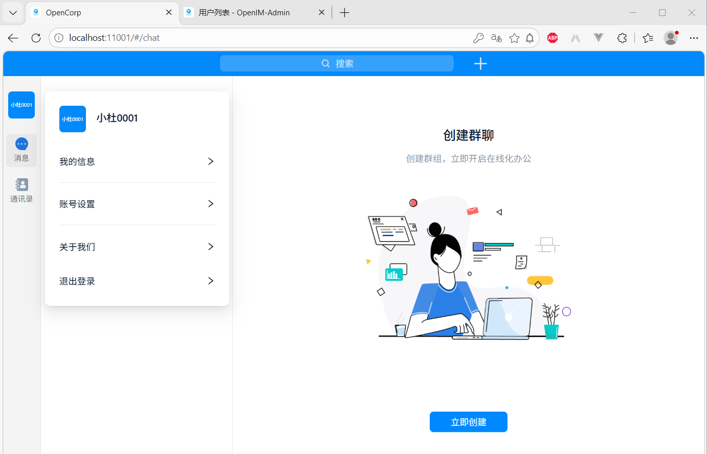
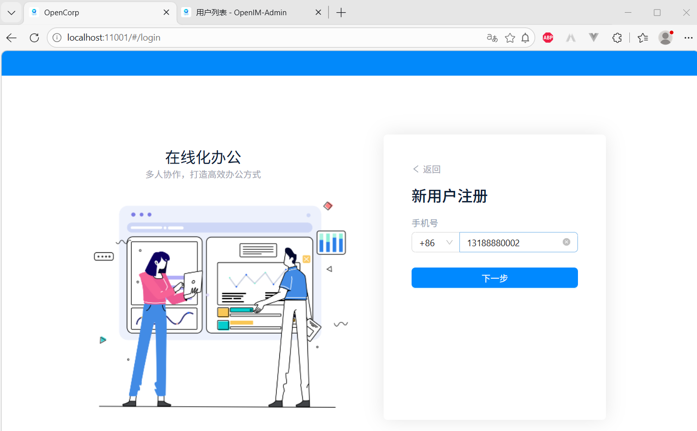
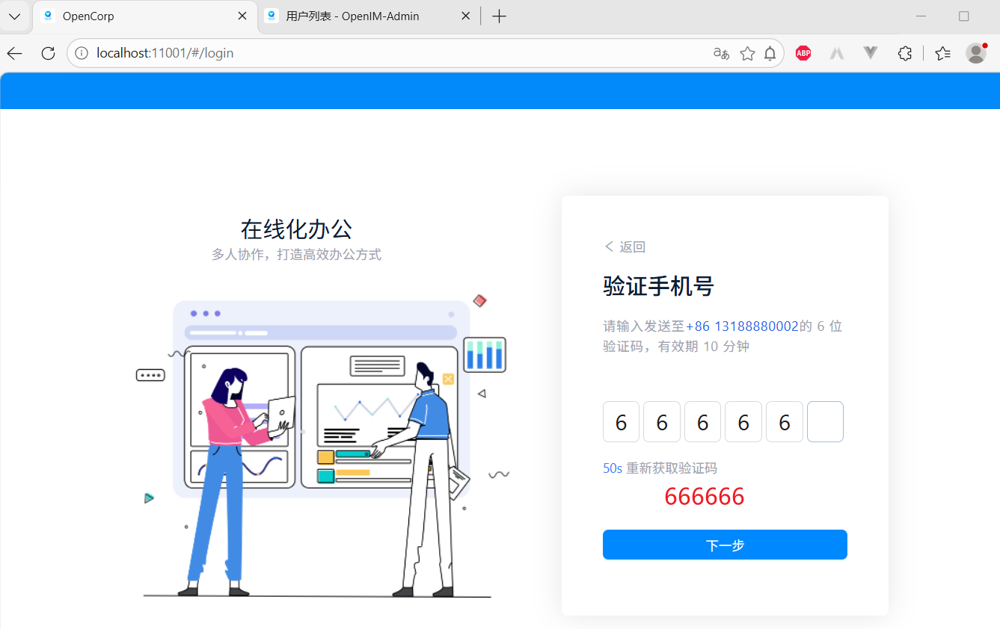
短信验证码是
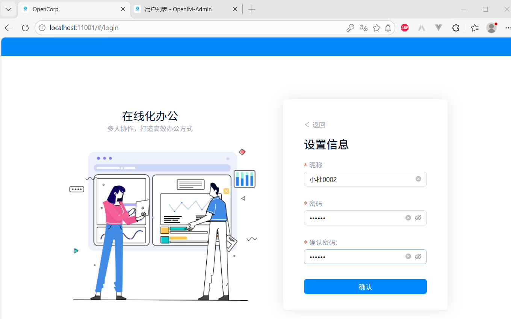
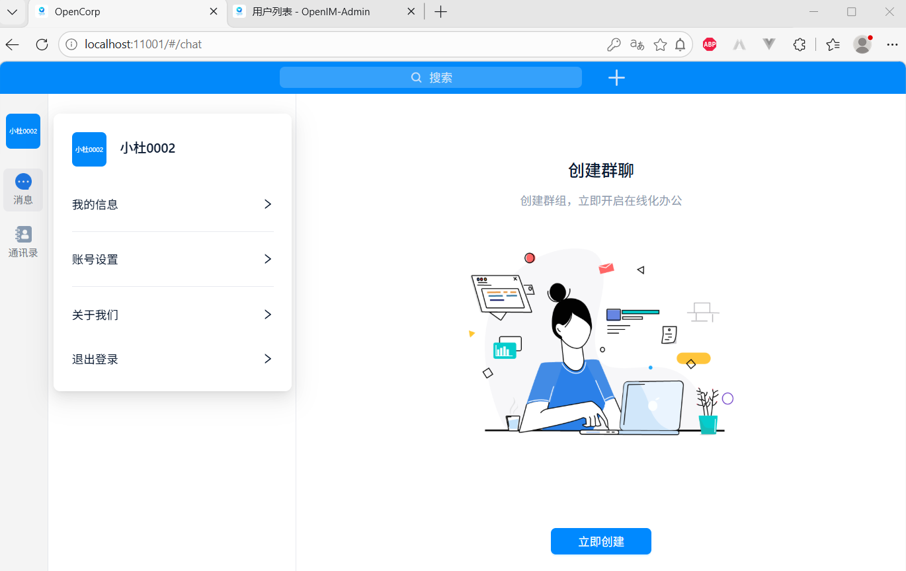
最后再回到“Admin 前端”看一下新注册的用户
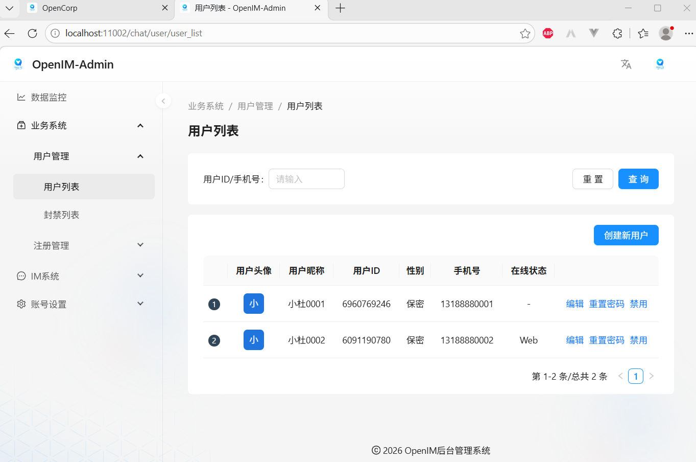